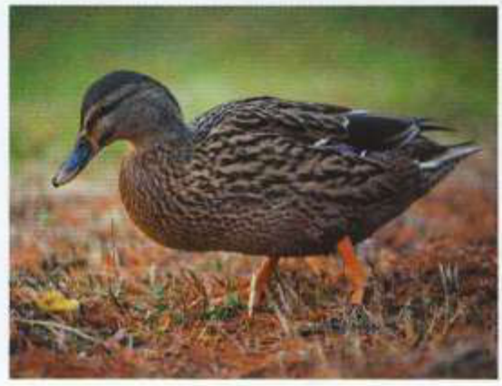
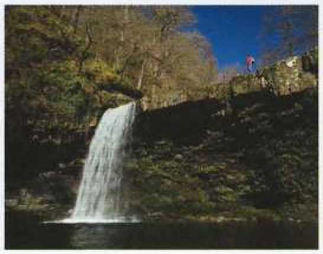
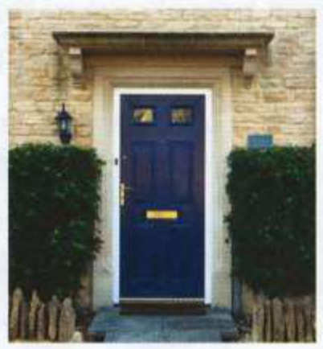

Bài tập
56.1
Viết lại phần gạch chân của mỗi câu sử dụng từ trong ngoặc.
1
There are a lot of useless people in my office. They should sack some people. [WOOD] (Có rất nhiều nhân sự kém năng lực ở văn phòng của tôi. Họ nên sa thải bớt một số người. [dead wood])
2
Putting Joshua in charge was the event that caused the project to fail. [KISS] (Việc giao cho Joshua phụ trách chính là sự kiện khiến dự án thất bại. [kiss of death])
3
His idea of building a plane and flying round the world has been abandoned. [DODO] (Ý tưởng chế tạo máy bay và bay quanh thế giới của anh ấy đã hoàn toàn bị từ bỏ. [as dead as a dodo])
4
The old family quarrel has now ended completely, and they live in harmony. [BURIED] (Mối bất hòa lâu đời của gia đình giờ đây đã chấm dứt hoàn toàn, và họ sống hòa thuận. [dead and buried])
5
The planning committee's decision was an event that caused the failure of the proposal to build the new airport. [BLOW] (Quyết định của ủy ban quy hoạch là đòn chí mạng khiến đề xuất xây dựng sân bay mới thất bại. [death blow])
56.2
Những bức tranh này gợi cho bạn nghĩ đến những thành ngữ nào có chứa dead hoặc death?
1

3
5

2
4
6

56.3
Hoàn thành mỗi câu với một thành ngữ từ bài 56.2.
1
The burglars came ............................ .................................. . .................... , when everyone was sleeping. (Kẻ trộm đã đột nhập vào lúc nửa đêm canh ba, khi mọi người đang ngủ. [in the dead of night])
2
The bank refused to lend him the money. That was the ....................................................... to
his plan to open a restaurant. (Ngân hàng từ chối cho anh ta vay tiền. Đó là đòn chí mạng đối với kế hoạch mở nhà hàng của anh ta. [death blow])
his plan to open a restaurant. (Ngân hàng từ chối cho anh ta vay tiền. Đó là đòn chí mạng đối với kế hoạch mở nhà hàng của anh ta. [death blow])
3
I was ....................................................... and didn't hear her enter the room. (Tôi đã ngủ say như chết và không nghe thấy cô ấy bước vào phòng. [dead to the world])
4
The negotiations have broken down, and the deal is ........................................................ (Các cuộc đàm phán đã đổ vỡ, và thỏa thuận này hoàn toàn thất bại. [dead in the water])
5
I don't think people will pay to have their computers cleaned every three months. That idea is
....................................................... ................................. if you ask me. (Tôi không nghĩ mọi người sẽ trả tiền để vệ sinh máy tính ba tháng một lần. Theo tôi thì ý tưởng đó đã hoàn toàn lỗi thời / chết yểu rồi. [dead as a dodo])
....................................................... ................................. if you ask me. (Tôi không nghĩ mọi người sẽ trả tiền để vệ sinh máy tính ba tháng một lần. Theo tôi thì ý tưởng đó đã hoàn toàn lỗi thời / chết yểu rồi. [dead as a dodo])
6
Poor old Jesse is ........................................................ I don't think he'll last another year. (Jesse già tội nghiệp đang kề cận miệng lỗ / sắp qua đời. Tôi không nghĩ ông ấy có thể sống thêm được một năm nữa. [at death's door])
56.4
Sửa các lỗi sai trong các thành ngữ.
1
You should only call an ambulance if it is the matter of death and life. (Bạn chỉ nên gọi xe cứu thương nếu đó là chuyện sống chết [the matter of death and life].)
2
The thieves stole the painting in the death of night. (Những kẻ trộm đã lấy cắp bức tranh vào lúc nửa đêm canh ba [the death of night].)
3
I am sick to the dead of people complaining all the time. It's not my fault! (Tôi đã chán ngấy những người suốt ngày phàn nàn. Đó đâu phải lỗi của tôi! [sick to the dead])
4
That old car is so dangerous. It's the dead trap. (Chiếc xe cũ đó thật nguy hiểm. Nó là một bẫy chết người [the dead trap].)
5
Having to sit next to my boring uncle at the restaurant was the fate like death. (Việc phải ngồi cạnh người chú tẻ nhạt của tôi ở nhà hàng quả là một số phận còn tệ hơn cái chết [the fate like death].)
6
Many people suffered a death in life in prison camps during the civil war. (Nhiều người đã phải chịu đựng một cuộc sống sống dở chết dở trong các trại giam suốt thời kỳ nội chiến. [a death in life])
7
The council are planning to demolish my house to build a motorway. On my dead body! (Hội đồng đang có kế hoạch phá dỡ nhà tôi để xây đường cao tốc. Bước qua xác tôi đã! [On my dead body])
8
There are too many dead woods on the school committee. They never do anything useful. (Có quá nhiều nhân sự kém năng lực trong ủy ban nhà trường. Họ chẳng bao giờ làm được việc gì hữu ích cả. [dead woods])